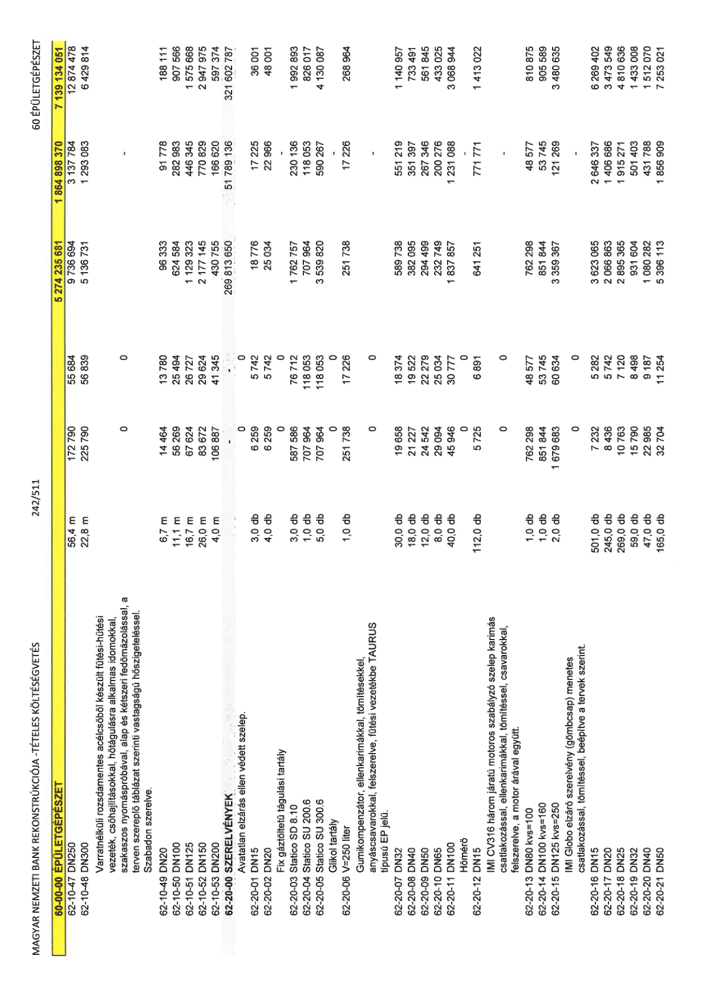

| Tétel | Menny. | Egys. | Anyag e.ár (net HUF) | Díj e.ár (net HUF) | Anyag összesen (net HUF) | Díj összesen (net HUF) | Anyag+Díj összesen (net HUF) |
|---|---|---|---|---|---|---|---|
| 62-10-47 DN250 | 56,4 | m | 172 790 | 55 684 | 9 736 694 | 3 137 784 | 12 874 478 |
| 62-10-48 DN300 | 22,8 | m | 225 790 | 56 839 | 5 136 731 | 1 293 083 | 6 429 814 |
| Varratnélküli rozsdamentes acélcsőből készült fűtési-hűtési vezeték, csőhajlításokkal, hőtágulásra alkalmas idomokkal, szakaszos nyomáspróbával, alap és kétszeri fedőmázolással, a terven szereplő táblázat szerinti vastagságú hőszigeteléssel. Szabadon szerelve. | 0 | 0 | 0 | 0 | 0 | 0 | 0 |
| 62-10-49 DN20 | 6,7 | m | 14 464 | 13 780 | 96 333 | 91 778 | 188 111 |
| 62-10-50 DN100 | 11,1 | m | 56 269 | 25 494 | 624 584 | 282 983 | 907 566 |
| 62-10-51 DN125 | 16,7 | m | 67 624 | 26 727 | 1 129 323 | 446 345 | 1 575 668 |
| 62-10-52 DN150 | 26,0 | m | 83 672 | 29 624 | 2 177 145 | 770 829 | 2 947 975 |
| 62-10-53 DN200 | 4,0 | m | 106 887 | 41 345 | 430 755 | 166 620 | 597 374 |
| 62-20-00 SZERELVÉNYEK | 0 | 0 | 0 | 0 | 269 813 650 | 51 789 136 | 321 602 787 |
| Avatatlan elzárás ellen védett szelep. | 0 | 0 | 0 | 0 | 0 | 0 | 0 |
| 62-20-01 DN15 | 3,0 | db | 6 259 | 5 742 | 18 776 | 17 225 | 36 001 |
| 62-20-02 DN20 | 4,0 | db | 6 259 | 5 742 | 25 034 | 22 966 | 48 001 |
| Fix gáztöltetű tágulási tartály | 0 | 0 | 0 | 0 | 0 | 0 | 0 |
| 62-20-03 Statico SD 8.10 | 3,0 | db | 587 586 | 76 712 | 1 762 757 | 230 136 | 1 992 893 |
| 62-20-04 Statico SU 200.6 | 1,0 | db | 707 964 | 118 053 | 707 964 | 118 053 | 826 017 |
| 62-20-05 Statico SU 300.6 | 5,0 | db | 707 964 | 118 053 | 3 539 820 | 590 267 | 4 130 087 |
| Glikol tartály | 0 | 0 | 0 | 0 | 0 | 0 | 0 |
| 62-20-06 V=250 liter | 1,0 | db | 251 738 | 17 226 | 251 738 | 17 226 | 268 964 |
| Gumikompenzátor, ellenkarimákkal, tömítésekkel, anyáscsavarokkal, felszerelve, fűtési vezetékbe TAURUS típusú EP jelű. | 0 | 0 | 0 | 0 | 0 | 0 | 0 |
| 62-20-07 DN32 | 30,0 | db | 19 658 | 18 374 | 589 738 | 551 219 | 1 140 957 |
| 62-20-08 DN40 | 18,0 | db | 21 227 | 19 522 | 38 095 | 351 397 | 733 491 |
| 62-20-09 DN50 | 12,0 | db | 24 542 | 22 279 | 294 499 | 267 346 | 561 845 |
| 62-20-10 DN65 | 8,0 | db | 29 094 | 25 034 | 232 749 | 200 276 | 433 025 |
| 62-20-11 DN100 | 40,0 | db | 45 946 | 30 777 | 1 837 857 | 1 231 088 | 3 068 944 |
| Hőmérő | 0 | 0 | 0 | 0 | 0 | 0 | 0 |
| 62-20-12 DN15 | 112,0 | db | 5 725 | 6 891 | 641 251 | 771 771 | 1 413 022 |
| IMI CV316 három járatú motoros szabályzó szelep karimás csatlakozással, ellenkarimákkal, tömítéssel, csavarokkal, felszerelve, a motor árával együtt. | 0 | 0 | 0 | 0 | 0 | 0 | 0 |
| 62-20-13 DN80 kvs=100 | 1,0 | db | 762 298 | 48 577 | 762 298 | 48 577 | 810 875 |
| 62-20-14 DN100 kvs=160 | 1,0 | db | 851 844 | 53 745 | 851 844 | 53 745 | 905 589 |
| 62-20-15 DN125 kvs=250 | 2,0 | db | 1 679 683 | 60 634 | 3 359 367 | 121 269 | 3 480 635 |
| IMI Globo elzáró szerelvény (gömbcsap) menetes csatlakozással, tömítéssel, beépítve a tervek szerint. | 0 | 0 | 0 | 0 | 0 | 0 | 0 |
| 62-20-16 DN15 | 501,0 | db | 7 232 | 5 282 | 3 623 065 | 2 646 337 | 6 269 402 |
| 62-20-17 DN20 | 245,0 | db | 8 436 | 5 742 | 2 066 863 | 1 406 686 | 3 473 549 |
| 62-20-18 DN25 | 269,0 | db | 10 763 | 7 120 | 2 895 365 | 1 915 271 | 4 810 636 |
| 62-20-19 DN32 | 59,0 | db | 15 790 | 8 498 | 931 604 | 501 403 | 1 433 008 |
| 62-20-20 DN40 | 47,0 | db | 22 985 | 9 187 | 1 080 282 | 431 788 | 1 512 070 |
| 62-20-21 DN50 | 165,0 | db | 32 704 | 11 254 | 5 396 113 | 1 856 909 | 7 253 021 |
